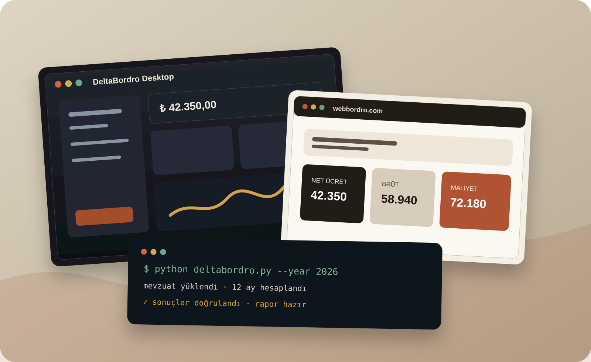
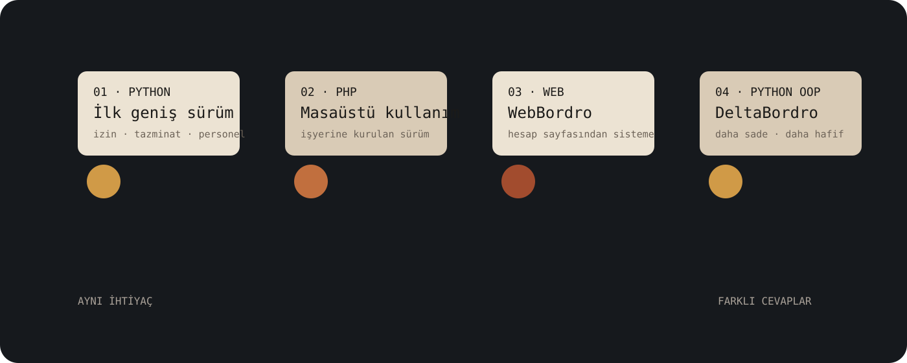

İlk Python masaüstü
İzin, işten çıkış, tazminat ve başka personel işlemlerini taşıyan ilk büyük sürüm. Çalıştı, fakat ağırlaştı.
Kod ve sistemler · Gelişiyor · Yaşayan sistem
Eşimin şirketindeki gerçek bir ihtiyaçla başladı. İlk Python sürümü, PHP masaüstü uygulaması, web sistemi ve daha sade DeltaBordro aynı soruya farklı zamanlarda verilmiş cevaplara dönüştü.

GERÇEK İHTİYAÇ
WebBordro’nun hikâyesi bir ürün fikriyle değil, eşimin şirketindeki ihtiyaçla başladı. O sırada AÖF Bilgisayar bölümünün ikinci sınıfına yeni başlamıştım; web tasarımı ve kodlama dersleri yeni bitmişti.
Bu işi, öğrendiklerimi gerçek kullanımda sınayabileceğim bir meydan okuma olarak gördüm: gerçekten kullanılan bir programı kendim yapabilir miydim?
İlk hedef büyük bir platform kurmak değildi. Şirketin işini gerçekten kolaylaştıran bir araç yapabilmekti.

DÖRT GÖVDE

İzin, işten çıkış, tazminat ve başka personel işlemlerini taşıyan ilk büyük sürüm. Çalıştı, fakat ağırlaştı.
İlk sürümden memnun kalmayınca PHP ile yeniden kurdum. Program artık gerçek iş akışının içinde yaşıyordu.
İlk web sürümü yalnızca hesap yapıyordu. Firma, kullanıcı, rapor ve yönetim katmanları ihtiyaç geldikçe eklendi.
Eşim ve şirket daha sade bir araç isteyince sistemi küçültmek yerine yeniden yazdım. Bugün güzel ve kararlı çalışıyor.
İLK BÜYÜK DERS
Bir program sonuç üretebilir ama doğru ürün olmayabilir. İlk sürüm çok şey yapıyordu; gerçek kullanıcı ise daha az karmaşa istedi.
Gerçek iş akışında kullanıldı.
Birçok personel işlemini tek yerde topladı.
Büyük bir uygulamanın nasıl büyüdüğünü öğretti.
Gereğinden fazla modül kullanım yükü oluşturdu.
Öğrendikçe ilk mimari kararlarımı sorguladım.
İlerleme bazen yeni özellik değil, sadeleşme oldu.
KODDAN DAHA ZOR OLANLAR
Çünkü çalışmak, bakımının kolay olduğu veya kullanıcıya doğru biçimde hizmet ettiği anlamına gelmez. Yeniden yazmak burada başarısızlık değil, öğrendiklerimi daha temiz bir yapıya taşıma kararıydı.
Masaüstünde çalışan hesabın kurulu olduğu bilgisayara bağlı kalmaması fikri web sürümünü doğurdu. İlk hâli küçüktü; gerçek ihtiyaç geldikçe büyüdü.
Geliştirici için kapsam güç gibi görünebilir. Günlük kullanıcı için hız, açıklık ve gereksiz adımların olmaması daha değerlidir. DeltaBordro bu geri bildirimin sonucudur.
YAPAY ZEKÂ VE BEN
Bu hikâyedeki en belirleyici kararlardan biri yeni özellik eklemek değil, daha sade bir sürüm yapmaktı.
Kod taslakları ve alternatif çözümler üretti.
Hata nedenlerini araştırmaya ve büyük dosyaları incelemeye yardım etti.
Tekrarlayan kod, arayüz ve belgeleme işlerini hızlandırdı.
Şirketin gerçekten neye ihtiyacı olduğuna karar verdim.
Hesapların ve iş akışının gerçek kullanımda doğru olup olmadığını kontrol ettim.
Fazla karmaşık önerileri reddettim ve gerektiğinde sistemi küçülttüm.
BUGÜN NEREDE?
Çok modüllü ilk yaklaşım. Sonraki sürümlerin neyi değiştirmesi gerektiğini gösterdi.
Eşimin şirketine kurulan ve masaüstü kullanımını sınayan sürüm.
Basit hesap sayfasından daha kapsamlı bir web sistemine dönüşen yaşayan proje.
Daha sade ihtiyaca cevap veren hafif, nesne yönelimli Python sürümü.
BENDE KALANLAR
#FikrimVar
Kusursuz olmak değil; denemek, yanılmak, öğrenmek ve fikri hayata geçirmek.